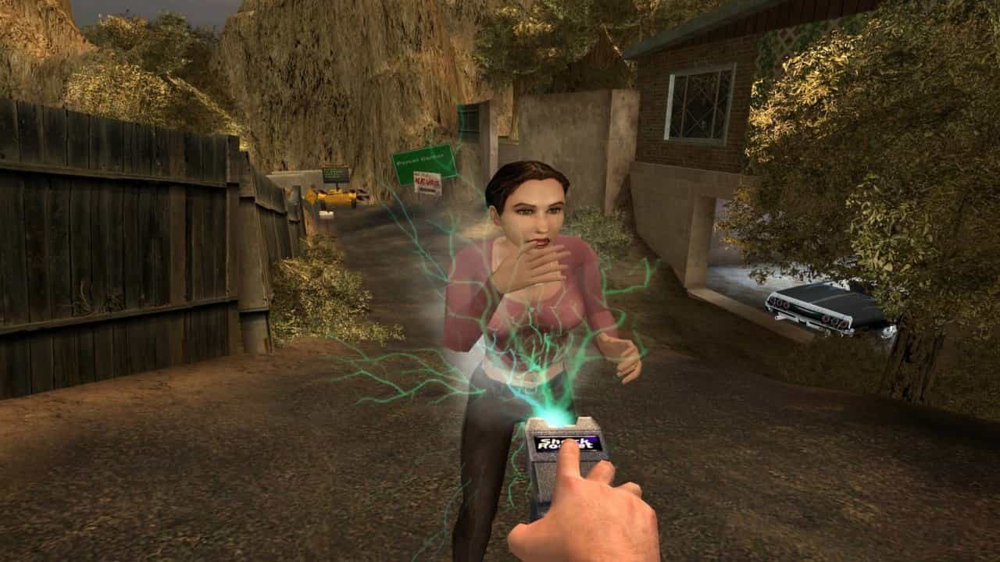

Postal 2
Postado 20 dezembro 2025
Postal 2 (2003) é um jogo de ação em primeira pessoa desenvolvido pela Running With Scissors, conhecido por seu humor extremamente ácido, politicamente incorreto e provocativo. Diferente de jogos tradicionais do gênero, Postal 2 não foca apenas em tiroteios, mas em oferecer ao jogador liberdade total de ações, permitindo interagir com o mundo de formas absurdas, controversas e muitas vezes chocantes. O jogo se passa na cidade fictícia de Paradise, onde o jogador controla o personagem conhecido como Postal Dude, que precisa cumprir tarefas simples do cotidiano, como ir ao banco, comprar leite ou devolver um livro, No entanto, essas atividades banais podem rapidamente se transformar em caos, dependendo das escolhas do jogador. É justamente essa liberdade que define Postal 2: o jogador pode seguir o caminho pacífico ou causar destruição generalizada.
Tecnicamente, Postal 2 utiliza a Unreal Engine, apresentando um mundo aberto para a época, com NPCs que reagem às ações do jogador de forma dinâmica. Apesar de não se destacar por gráficos avançados, o jogo ficou marcado por sua inteligência artificial imprevisível, física exagerada e situações absurdas, que reforçam o tom satírico da obra. Devido ao seu conteúdo violento e ofensivo, Postal 2 foi alvo de polêmicas, censuras e proibições em vários países. Ainda assim, conquistou um público fiel e se tornou um jogo cult, justamente por desafiar limites morais e criticar a sociedade por meio do exagero e da sátira. Hoje, Postal 2 é lembrado como um dos jogos mais controversos da história dos videogames, não por sua qualidade técnica, mas por sua liberdade extrema, humor negro e ousadia, que o tornaram único e inesquecível dentro da indústria dos games.
VoltarPostagens Recentes
O The Game Awards, também conhecido como TGA, é a maior premiação da indústria de videogames, sendo responsável pela popularização do “GOTY” ("Game of the Year", o “Jogo do Ano”) — ou seja, aquele game que é considerado como o melhor do ano pela crítica e comunidade...
Leia maisPois é, o primeiro vencedor do “GOTY” do Spike Video Game Awards foi nada menos do que Madden NFL 2004, jogo de futebol americano da Electronic Arts, prêmio ganho no ano de 2003...
Leia mais